Aatrox the Darkin Blade
Use Umbral Dash while casting The Darkin Blade to increase your chances of hitting the enemy
Crowd Control abilities like Infernal Chains or your allies' immobilizing effects will help you set up The Darkin Blade
Cast World Ender when you are sure you can force a fight
Aatrox's attacks are very telegraphed, so use the time to dodge the hit zones
Aatrox's Infernal Chains are easier to exit when running towards the sides or at Aatrox
Keep your distance when Aatrox uses his Ultimate to prevent him from reviving

Ahri the Nine-Tailed Fox
Use Charm to set up your combos, it will make landing Orb of Deception and Fox-Fire dramatically easier
Initiate team fights using Charm, and chase down stragglers with Spirit Rush
Spirit Rush enables Ahri's abilities, it opens up paths for Charm, helps double hitting with Orb of Deception, and closes to make use of Fox-Fire
Ahri's survivability is dramatically reduced when her Ultimate, Spirit Rush, is down
Stay behind minions to make Charm difficult to land, this will reduce Ahri's damage potential significantly
Akali the Rogue Assassin
Akali excels at killing fragile champions. Let your team initiate and then strike at the people in the back
Twilight Shroud offers safety in even the most dangerous situations. Use that time to save up energy for a quick strike later
Akali can still be hit by area effect spells while obscured inside Twilight Shroud. Doing so will briefly reveal her position
Akali's Five Point Strike is powerful when used at maximum range and energy. Engage on her when she has low energy to maximize your chance of winning trades
Return to base if your Health is low and Akali has her ultimate available
Akshan the Rogue Sentinel
Raising an eyebrow in the face of danger, Akshan fights evil with dashing charisma, righteous vengeance, and a conspicuous lack of shirts. He is highly skilled in the art of stealth combat, able to evade the eyes of his enemies and reappear when they least expect him. With a keen sense of justice and a legendary death-reversing weapon, he rights the wrongs of Runeterra's many scoundrels while living by his own moral code: “Don't be an ass.
Waiting for update
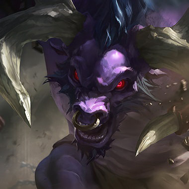Alistar the Minotaur
Using Pulverize can allow you to establish better positioning for Headbutt
Move Speed is very important on Alistar. Consider which boots to buy carefully
Using Flash can allow you catch your target off guard to knock them back into your allies with Pulverize and Headbutt
Alistar is very disruptive but very tough - try to target more fragile damage dealers
Watch out for the Pulverize-Headbutt combo when around turrets
When Alistar uses his ultimate, it's often better to move back and wait until the effect wears off before attacking him

Amumu the Sad Mummy
Amumu is highly dependent on teammates, so try laning with your friends for maximum effectiveness
Cooldown Reduction on Amumu is very strong, but it's often difficult to itemize for it. Grab the Golem buff whenever possible to gain Cooldown Reduction without sacrificing stats
Despair is very effective against other tanks, so make sure you're in range of opponents with the highest Health
Avoid bunching up with other allies when Amumu has his ultimate available
Erratic movement, or hiding behind creep waves can make it difficult for Amumu to instigate a fight with Bandage Toss
Amumu's Despair makes purchasing primarily Health items a risky proposition

Anivia the Cryophoenix
Timing Flash Frost with Frostbite can lead to devastating combinations
Anivia is extremely reliant on Mana for Glacial Storm. Try getting items with Mana or going for a Crest of the Ancient Golem buff on Summoner's Rift
It can be very difficult for enemy champions to kill her egg early in game. Seize the advantage by playing aggressively
Try to gank Anivia when she's laning. With multiple people, it is easier to ensure that her egg dies
If you're playing a ranged champion, stay far enough away from Anivia so you can dodge Flash Frost more easily
Try to fight Anivia in the lanes. In the jungle she can block pathways with lower ranks of Crystallize

Annie the Dark Child
Storing a stun for use with her ultimate can turn the tide of a team fight
Striking killing blows on minions with Disintegrate enables Annie to farm extremely well early in the game
Molten Shield is a good spell to cast to work up to Annie's stun, so sometimes it's beneficial to grab at least 1 rank in it early
Annie's summoned bear, Tibbers, burns opposing units around himself. Try to keep your distance from him after he's been summoned
Summoner Smite can be used to help take down Tibbers
Keep an eye out for a white, swirling power around Annie. It means she's ready to unleash her stun
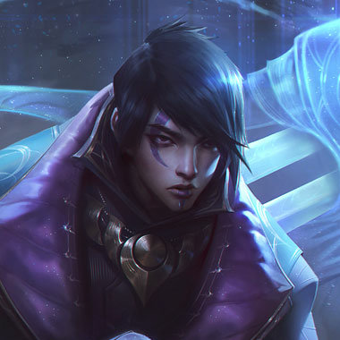Aphelios the Weapon of the Faithful
Each of Aphelios' weapons have different strengths, so try to find the right situation for your current weapons.
Each of Aphelios' weapons have different weaknesses, try to exploit the ones that work best for your champion. Watch out for the purple Gravity gun, it can root you

Ashe the Frost Archer
Try to fire Enchanted Crystal Arrow in the same direction enemies are moving, so it is more likely to hit
Volley arrows are blocked by the first enemy they hit, so keep your distance to avoid having them all absorbed by enemy frontliners
Hawkshot reveals units in brush. If a team fight is occuring in the jungle it can give you a significant advantage
Ashe has very few defensive options, and she's a good target to gank
Be wary of moving around the map alone if Ashe has not recently cast her Enchanted Crystal Arrow

Aurelion Sol The Star Forger
You can use Comet of Legend's flight to grow Starsurge to massive proportions
Save Voice of Light to use as a defense against melee opponents if you need to - otherwise, use its slow to start a fight at long range
Comet of Legend allows you to move quickly around the map; use it to put pressure on other lanes
Try to get inside his orbit, since his stars can't hurt you up close
His stars disappear while stunned or silenced, giving you an easy opportunity to fight him
He gains speed while chasing in a straight line, but taking damage makes him lose that momentum
His Starsurge ability can grow to cover a huge area - don't stay in the same place too long

Azir the Emperor of the Sands
Be careful about putting down both of the soldiers stored by Arise! Unless you're going all-in, always have a soldier in your back pocket if you need to escape over a wall or if you misposition your other soldier and need damage now
In the lane, try to position your soldiers between the enemy's minions and the enemy champion. This way you can use them both to last hit and to project threat onto your lane opponent
Think of Emperor's Divide as a defensive ability first and foremost. Use it when the enemy engages on you or your allies. Remember that your team can walk through the soldiers summoned by Emperor's Divide and use this to your advantage when enemy melee champions engage on you
Be a bird
Azir relies on his soldiers to deal damage and can only move them so often. Try to capitalize on windows of time when his soldiers are stationary
Azir has immense damage over a prolonged amount of time but lacks the upfront burst of other mages. Try to burst him out before he can turn a confrontation around
Try to think of Sand Soldiers as fire. Don't stand in the fire

Bard the Wandering Caretaker
It's important to collect chimes to improve your meep's attacks, but don't neglect your lane partner! Try to make a big entrance by bringing an ally into the lane with you with Magical Journey
Let your Caretaker's Shrines charge up - they heal for a lot more when at full power
Don't forget that enemies can also use your Magical Journey doorways, and that your ultimate can also hit your allies
Bard's opponents can also travel through his Magical Journey doorways. You can follow him, if you think it's safe
You can crush Bard's healing shrines just by walking over them. Don't let his allies take them without a fight
Bard's ultimate, Tempered Fate, affects allies, enemies, monsters, and turrets alike. Sometimes it can be to your advantage to jump into it

Blitzcrank the Great Steam Golem
The 1-2-3 combo of Rocket Grab, Power Fist, and Static Field can devastate an individual opponent
Using Blitzcrank's grab to pull an enemy into your tower range followed by a Power Fist will allow the tower to get several hits on them
Blitzcrank's passive Mana Barrier grants him a shield when he is low on health
Staying behind creeps can prevent you from being Rocket Grabbed. Blitzcrank's Rocket Grab only pulls the first enemy target it encounters

Brand the Burning Vengeance
You can deter enemies from standing near their minions by setting them ablaze, due to Conflagration
You can use Brand's abilities in a variety of combinations to maximize his damage in different situations
Pyroclasm bounces randomly between enemies, so try to cast it on a small group of enemies if you want to hit the same target multiple times
Brand must land an ability before his combo is able to get started. Dodging his Sear or Pillar of Flame will disrupt his rhythm
Try to move away from allies when you see Pyroclasm being cast. The initial missile speed is slow, which should give your team time to react
Brand's passive allows him to excel against teams that cluster together. Be sure to split up against him
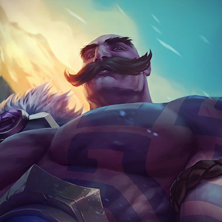Braum the Heart of the Freljord
Work with your allies to stack Concussive Blows, encourage them to basic attack marked targets
Leap in front of squishy friends and shield them from projectiles with Unbreakable
Glacial Fissure leaves a powerful slow zone, position it well to split teamfights and slow the enemy approach
Braum must land Winter's Bite or a basic attack to start Concussive Blows. If you get marked, exit combat range before getting hit 3 more times to avoid the stun
Braum's ultimate has a long cast time, use that extra time to dodge. Walking over the frozen ground left behind will slow you, position so that you don't need to cross it
Unbreakable gives Braum extremely strong directional defense, either wait until it is down or outposition the ability
Caitlyn the Sheriff of Piltover
Make use of her Yordle Snap Traps by placing them pre-emptively to ensure that you'll have one off of cooldown during combat
Avoid using Ace in the Hole in large team melees as it might be blocked by the wrong target
Fire 90 Caliber Net away from the opponent to close the gap or hop over walls
Keep behind allied minions if Caitlyn is harassing you with Piltover Peacemaker (it deals less damage with each subsequent target)
You can intercept Ace in the Hole's missile from hitting an ally if you stand in its path

Camille the Steel Shadow
Try waiting until the other team is distracted with fighting your team, and use Hookshot to pick off vulnerable targets
Use the CC from your abilities to land both of your Precision Protocol attacks on enemies
Camille's shield only works against one damage type, so hit her when she's vulnerable to your damage
The Hextech Ultimatum has a very short range to cast, so try to flash away from her before she gets close
Cassiopeia the Serpent's Embrace
Use Twin Fang on poisoned stationary targets like monsters and units stunned by her Petrifying Gaze for maximum damage
Lead your enemy when targeting with Noxious Blast to ensure the hit
Be wary of Cassiopeia's damage potential with Twin Fang when she has you poisoned
Turn away from Cassiopeia when she is casting Petrifying Gaze to get slowed instead of stunned

Cho'Gath the Terror of the Void
Try to line up your attacks with Vorpal Spikes so that they kill minions and harass enemy champions at the same time
If you're having difficulty feasting upon champions, try eating minions until you're larger
Using Rupture on creeps in combination with Carnivore is a good way to gain Health and Mana
Purchasing a few HP items decreases the chances of Cho'Gath killing you quickly
Focus on preventing Cho'Gath from reaching his max size
Rupture has a smoke cloud indicating the area it will strike. Try to watch out for it to prevent Cho'Gath from being able to combo his abilities
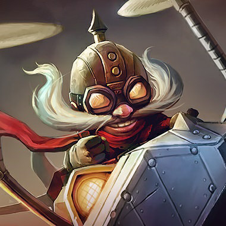Corki the Daring Bombardier
Phosphorus Bomb can be used to reveal enemy units that might be hiding in a nearby patch of brush
Valkyrie can be used defensively as well, so try using it for a quick escape
Corki can continue to attack while using Gatling Gun. Maximizing Gatling Gun is key to mastering Corki
Watch out for Corki's Missile Barrage. They deal splash damage, so you can get hit even when hiding behind minions
Corki is vulnerable after he uses his Valkyrie or Special Delivery, so try switching focus to him if he uses them to enter a fight

Darius the Hand of Noxus
Decimate is a powerful harassment ability. Strike an enemy from maximum range for the greatest effect
Noxian Guillotine does more damage the more attacks you can land prior to it. Use Noxian Might to deal maximum damage
Darius benefits greatly from enhanced survivability. The longer you can prolong a fight, the more powerful he becomes
When Darius's axe grab is on cooldown, he is vulnerable to harassment attacks
Darius's ability to escape from fights is limited. If you have an advantage against him, press your lead

Diana Scorn of the Moon
Landing Crescent Strike is critically important, but don't be afraid to miss. The cooldown is short and the mana cost is low
Consider when to cast Lunar Rush without Moonlight and when to wait for another Crescent Strike
Use Moonfall and Lunar Rush to stay on targets and activate Moonsilver Blade for extra damage
Dodge Crescent Strike, or move to safety if you are affected by Moonlight
Pale Cascade orbs only last a few seconds. Avoid Diana and engage her after the shield dissipates
Diana can play very aggressively if she uses Lunar Rush without Moonlight, but you can punish her by slowing or stunning her when she has no way to get back into position

Draven the Glorious Executioner
If Draven doesn't move, Spinning Axe will fall near his present location. It will fall directly on him, or just to the right or left
If Draven does move after attacking, Spinning Axe will lead him in the direction of his movement. Use this to control where the Spinning Axe will go
Launch skillshots toward the landing position of Draven's Spinning Axes
Disrupt Draven with the goal of making him drop his axes. If you do, his power drops dramatically
Dr. Mundo the Madman of Zaun
A well-timed Sadism can bait enemy champions into attacking you even when they lack the damage to finish you
Spirit Visage will increase the healing done by your ultimate and lower cooldowns on all of your abilities
Cleavers are a powerful tool for killing neutral monsters. Instead of returning to base, farm neutral monsters until your ultimate can heal you
Try to coordinate high-damage abilities with your allies right after Dr. Mundo uses his ultimate, but if you're unable to kill him quickly with burst he will heal through the damage
Try casting Ignite when Dr. Mundo uses Sadism to negate a large portion of its healing

Ekko the Boy Who Shattered Time
Chronobreak is a potent escape tool, but it can also be quite powerful when used offensively. Don't underestimate its damage potential
If you can proc Z-Drive Resonance on an enemy champion, it's worth taking risks to do so. The bonus Move Speed makes it easy to escape
Phase Dive's dash is a great tool for setting up Ekko's other abilities. Use it to get double hits with Timewinder or get into position to detonate Parallel Convergence
Ekko is significantly weaker when his ultimate is down. Watch for the trail he leaves behind to determine if Chronobreak is available
Ekko's stun zone takes 3 seconds to arm. Watch for the image he creates on cast and try to guess where the zone was placed
The second hit of Timewinder does more damage than the first; try to avoid it

Elise the Spider Queen
Spider Form is most effective at finishing off enemies with low health; Human Form's Neurotoxin does more damage to healthy foes. ","When in Spider Form, Spiderlings will attack the target that Elise uses Venomous Bite on. ","Elise's Spider Form and Spider Form abilities do not cost mana and can be prioritized when you are trying to conserve mana
Elise's Spider Form is more dangerous when you are at low health, and her Human Form more potent when you are at high health
Rappel will only move Elise straight up and down unless she can descend upon an enemy unit
Rappel has a long cooldown. Elise is vulnerable after she has used it
Evelynn Agony's Embrace
Allure's arm time might seem long, but the Charm and magic resist shred put Evelynn at an exteme advantage so are worth the wait
While stealthed, pay attention to when you are (near) being detected by enemy champions. This is identified by the glowing yellow and red eyes over nearby enemy champions
If at low health, you can take advantage of Demon Shade's healing and Camouflage to return to the fight and surprise opponents
Purchasing Vision Wards can help you detect Evelynn's location in order to prepare for her ambushes
A large share of Evelynn's threat is in her charm, 'Allure.' Protect allies marked with 'Allure' or, if you are marked, make sure allies are between you and where Evelynn may attack from
If you suspect Evelynn is about to ambush one of your teammates, let them know by pinging the minimap and typing in chat

Ezreal the Prodigal Explorer
Use Arcane Shift to help line up your other skill shots
You can play Ezreal either as a Attack Damage carry or Ability Power carry depending on how you build him
You can line up Trueshot Barrage to hit multiple minion waves or even Monsters
Ezreal is a very fragile champion so take the fight to him
Ezreal is completely skill shot based, so make sure to keep minions in between you
Mystic Shot applies on-hit effects including the Crest of Cinders
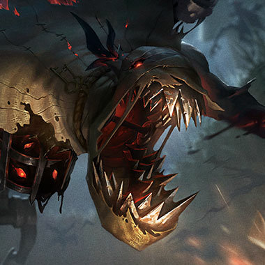Fiddlesticks the Ancient Fear
Waiting for update
Waiting for update

Fiora the Grand Duelist
Thanks to Duelist's Dance, Fiora excels at quick trades. Use the Move Speed boost from striking a Vital to escape unscathed or set up for the next one
Grand Challenge allows Fiora to take down even the most durable opponents and then recover if successful, so do not hesitate to attack the enemy's front line
Duelist's Dance shows you where Fiora will try to attack from, so be ready to punish her when she tries
Be careful when casting immobilizing disables on Fiora. If her Riposte is available, she can turn their power against you

Fizz the Tidal Trickster
Since Fizz can move through units, find opportunities in lane to walk through minions and apply Seastone Trident's passive - following it up with the ability's active attack after a few seconds
Fizz's ultimate ability, Chum the Waters, can be aimed at an enemy or towards the area where you think they'll be going
Fizz's spells scale off Ability Power - consider getting items like Zhonya's Hourglass or Banshee's Veil against teams that have high burst threat - and items like Lich Bane or Rabadon's Deathcap if you think you can survive without the Health
Fizz's attacks becomes more deadly for a few seconds after he uses his empowered attack - keep him away while his trident is glowing!","Fizz is a slippery target when his abilities are not on cooldown - bait him into using them early and follow up with crowd control or hard-hitting attacks

Galio the Colossus
You can release Shield of Durand even while crowd controlled
You can use the minimap ally icons to cast Hero's Entrance
You can use the step back from Justice Punch to dodge enemy spells
Galio moves slower when he is charging Shield of Durand
Hero's Entrance can be interrupted before Galio jumps into the air
Galio cannot traverse walls with Justice Punch
Gangplank the Saltwater Scourge
Parrrley applies On Hit effects like Frozen Mallet or Black Cleaver
Paying attention to low-health enemies on the map can land you a surprise kill with Cannon Barrage
Try placing Cannon Barrage on the path of escape to cut off fleeing enemies
Parrrley deals a high amount of physical damage. Items that grant Armor can help if an enemy Gangplank is doing well
Once Gangplank reaches level 6, watch out for his global-range ultimate, Cannon Barrage

Garen The Might of Demacia
Garen's regeneration greatly increases if he can avoid receiving damage for several seconds
Judgment deals maximum damage when only hitting a single target. For effective trading, try to position such that only the enemy champion is hit
Garen is only constrained by cooldowns, making items such as Black Cleaver very effective for him
Stack armor items to lower the large amount of physical damage that Garen deals out
Try to run away from Garen as your health gets lower, as he can execute you quickly with Demacian Justice
Be careful about attacking Garen in brush. It often will lead to taking full damage from Judgment
Judgment deals maximum damage when only hitting a single target. If getting out of its radius isn't possible, move through allied minions to reduce damage taken

Gnar the Missing Link
Managing your Rage is very important. Try to time out your transformations so you can get maximum benefit from both forms
Position yourself next to walls to bait your enemies into getting stunned by your ultimate
Know your strengths! Mini Gnar is fast, squishy, and has high sustained damage. Mega Gnar is slow, tough, and has high burst
Gnar can't gain Rage for 15 seconds after he turns from big to little. Use this chance to engage on his team
Gnar's animations and resource bar change as he gets closer to transforming. ","Gnar's ultimate stuns if he hits you into a wall. Be careful when fighting him near one

Gragas the Rabble Rouser
The damage reduction from Drunken Rage is applied when you start drinking, try to use it when you see damage coming your way
Try to knock enemies back into your towers with Explosive Cask
Try to combo Body Slam with Explosive Cask to set up kills for your team
Gragas can knock everybody away with his ultimate. Be careful that you don't get knocked into him or, worse, an enemy tower
Body Slam is on a very low cooldown, making it difficult to pursue Gragas. Don't overextend yourself chasing him

Graves the Outlaw
Smoke Screen can be used both to escape and to set up a kill
Using Quickdraw to get into range and delivering a point blank Buckshot can do lots of damage
Graves deals mostly physical damage so Armor is an effective counter
Leaving the Smoke Screen's area of effect removes the harmful effect immediately
Gwen The Hallowed Seamstress
Always be Attacking - In addition to dealing bonus damage, Gwen's Attacks empower or reset many of her Abilities
Gwen can still damage enemies outside her Hallowed Mists, especially with her Ultimate's range
Some of Gwen's Abilities can apply her passive to multiple enemies, so aim them at groups to get maximum damage and healing
Gwen's Hallowed Mist shroud will only follow her once, after that it will dissipate when she leaves
Gwen must hit something to recast her Ultimate, try to evade her between casts
Gwen needs to attack a few times to set up her damage, so try to get the jump on her

Hecarim the Shadow of War
Spirit of Dread restores Health when nearby enemies take damage, including damage dealt by allies. Cast this during a large fight to maximize Hecarim's survivability
Devastating Charge deals more damage based on the distance traveled. Try using Onslaught of Shadows or Summoner Spells such as Ghost or Flash to maximize this damage
Hecarim gains life from nearby enemies with Spirit of Dread but lacks durability, use burst damage
Hecarim's ultimate causes opponents to flee in terror. Spread out to reduce his power in fights

Heimerdinger the Revered Inventor
Turret placement can be a deciding factor in a battle. Against most enemies turrets are best when they can support each other, but if the enemy has a lot of area of effect damage your turrets can be destroyed quickly. Placing turrets in brush can lead to a surprise attack in your favor
The success of Electron Storm Grenade is very important to Heimerdinger's survival. The slow and stun both are capable of keeping enemies in place long enough to punish them, but it is also the first line of defense against a surprise attack
Spreading out Hextech Micro-Rockets leads to more reliable damage and more efficiency against multiple targets, but focusing it creates the biggest impact
It's better to destroy all of Heimerdinger's turrets at once with the help of creeps than to fight them one at a time
Be wary of Heimerdinger's Upgrade!!!, as he can use it to find an answer to most trouble he gets into. Once his ultimate is down, go in for the kill

Illaoi the Kraken Priestess
Tentacles are an immense source of power. Don't fight without them
Spirits inherit their target's current health. If making a ","Vessel"," is your goal, try whittling your opponent's health down a bit first to make killing the spirit easier
Leap of Faith is best used to follow-up a strong engage or when being engaged upon. Be careful about being the first one into a fight
Killing Tentacles whenever possible will make it much easier to win a fight against Illaoi
When your spirit gets pulled out, fight back if you can. Dealing damage to Illaoi reduces the spirit's duration
Avoid grouping up for Leap of Faith to reduce the number of Tentacles available to Illaoi
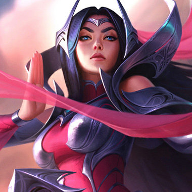Irelia the Blade Dancer
Use Bladesurge to cover great distances by targeting low life minions on your way to champion targets
Defiant Dance is not interrupted by crowd control, try timing it for incoming disables
Flawless Duet does not have a maximum travel distance, try using it in creative ways
Pay attention to Ionian Fervor stacks and try to engage Irelia when it is down
Minion waves greatly enhance Irelia's mobility, beware fighting her inside one
Beware of wasting your high impact spells on Defiant Dance

Ivern the Green Father
Try to help allies follow up a good Rootcaller hit with Triggerseed!","Use Brushmaker to set up future ambush spots!","Daisy can block skillshots and slow down enemies. Use her to peel for your teammates
Ivern can be deceptively slippery. Be careful chasing him too far
Ivern's brush has a long duration. Watch out for ambushes!","Be careful when fighting Ivern alone if he has Daisy ready to help

Janna the Storm's Fury
Eye of the Storm can be used on allied turrets
Quickly firing a Howling Gale without the charge up can be used to heavily disable the other team
Timing Janna's ultimate can push enemies away from a wounded ally or even separate enemies
Save an interrupt ability for when Janna uses her ultimate
Listen for the charge up sound on Howling Gale in case Janna is trying to hit you with it from off screen or from brush
Janna's at her strongest when buffing another ally. If you can harass her ally, it will weaken her ability to fight you

Jarvan IV the Exemplar of Demacia
You can use the Dragon Strike / Demacian Standard combo to get out of your own Cataclysm arenas
Split your basic attacks on different champions at the beginning of fights to maximize damage
Use Demacian Standard as a scouting tool when worried about incoming enemies
Keep out of the path between Jarvan IV and his Demacian Standard to avoid being knocked up in the air
Cataclysm's terrain is a frightening force to fight against, but movement abilities can go through it

Jax Grandmaster at Arms
Jax can Leap Strike to friendly units, including wards. You can use them to plan your escape
Jax benefits greatly from items that have both Ability Power and Attack Damage such as Guinsoo's Rageblade and Hextech Gunblade
Try to engage him in short bursts instead of going toe-to-toe with him. Preventing him from attacking consecutively drastically lowers his damage output
Jax can dodge all incoming attacks for a very short amount of time and stuns enemies in melee range when it ends. Wait to strike him until after his dodge is finished

Jayce the Defender of Tomorrow
Be sure to switch stances often. It will enhance your attacks and grant you quick bursts of speed
If you find yourself taking lots of damage, try using Jayce's Hammer Stance, as it grants you additional defenses
For increased range and damage, try casting Shock Blast through the Acceleration Gate
Jayce can attack in melee or at range. Pay attention to his stance and weapon color to know how he is going to attack
If you see Jayce drop his Acceleration Gate, be careful, he is probably about to cast Shock Blast
Jayce is strong in the early game. If he gains the advantage, play defensively

Jhin the Virtuoso
Deadly Flourish has incredible range. When approaching a fight be sure to look ahead for enemies that could be rooted
Your ultimate deals significantly less damage to enemies with full health. Look to pick off weakened targets as they run away
You can still cast your spells while reloading. Use them to fill the down time
Deadly Flourish only roots those hit by one of Jhin's basic attacks, traps, or allies within the last 4 seconds
Jhin places invisible traps around the map. Watch where you step!","Jhin's attacks are quite potent, but he runs out of ammo after the 4th shot. Use this window to jump him and burst him down

Jinx the Loose Cannon
Rockets aren't always the best choice! Jinx's minigun is incredibly powerful when fully ramped up. Switch to it whenever an enemy champion gets too close
Jinx's rockets deal full damage to all enemies in the explosion. Use them on minions in lane to hit nearby enemy champions without drawing minion aggro
When a fight starts try to stay on the edge of fray by poking with rockets and Zap!. Do not run in and unload with the minigun until you feel it is safe
Jinx's minigun takes time to ramp up. If you see her poking with rockets try to jump on her and burst her down
Jinx's ultimate does less damage the closer you are to her
Jinx's snare grenades have a long cooldown and are her primary means of protecting herself. If she misses with them she will have a hard time escaping if engaged upon.

Kai'Sa Daughter of the Void
Try to catch enemy carries alone to burst them with Icathian Rain
Work with your teammates to set up your Ultimate and optimize damage with your passive
Make sure to buy items that will evolve at least 1 or 2 of your spells
Kai'Sa is very good at picking off isolated enemies. Stick together against her
Kai'Sa is very vulnerable to getting outranged by mages and long range carries
Make sure to place wards in your blind spots so you can see Kai'Sa coming

Kalista the Spear of Vengeance
Rend is a valuable last hitting aid, since its cooldown resets if it kills a target. ","Entering a move order once to trigger Martial Poise will not clear Kalista's basic attack target
Due to her passive, Kalista's Move Speed is effectively increased by Attack Speed
Kalista's mobility is dependent upon attacking. This means it is low when she is outside of her attack range and that Attack Speed slows reduce the amount of distance she can cover in an engagement
Kalista cannot cancel her basic attack wind up. While she is very mobile, this offers a window to land spells on her if you anticipate when she will begin attacking
If you can break line of sight from Kalista, including through brush, her basic attacks will miss you, falling harmlessly to the ground
Karma the Enlightened One
Gathering Fire rewards aggressive play. Look to land abilities and basic attacks on your opponent to lower Mantra's cooldown and stay on the offensive
When using Focused Resolve, slow your opponents with Inner Flame or speed yourself up with Inspire if you're having trouble sticking to a target. ","Don't be too conservative with Mantra. Gathering Fire is strongest in teamfights, making it easy to recharge Mantra multiple times
Karma's passive lowers her Mantra cooldown when she hits enemy champions with abilities and basic attacks. Deny her from getting free hits on you
Karma's Soulflare erupts for bonus damage in the area in which it's placed. React quickly and escape the circle to avoid taking heavy damage
Focused Resolve is a strong disengage tool. Create distance to avoid being rooted and seek to engage afterwards

Karthus the Deathsinger
Ask your allies to help point out when you should use Requiem to get kills in different lanes
Lay Waste is very strong at farming minions and harassing enemy champions
Karthus can cast spells for a short duration after he is killed. Move away from his corpse to be safe
Make sure you always have enough health to survive Requiem, even if you have to go back to the base more frequently to heal
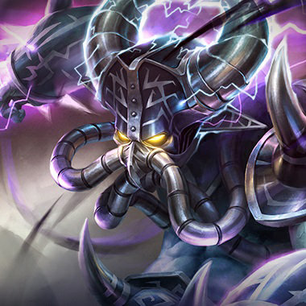Kassadin the Void Walker
Kassadin has multiple item paths; he can go caster via Mana and Ability Power or anti-caster with Cooldown Reduction and Magic Resist
Kassadin's ultimate has many uses and is on a shorter cooldown than most, use it often
Try to get the Ancient Golem buff to counteract Riftwalk's increasing Mana cost
Kassadin deals mostly magic damage. If he's doing well consider buying magic resist items like Mercury's Treads and Banshee's Veil
Each time Kassadin consecutively uses Riftwalk, he pays more and more mana. Keep this in mind as you chase him
It takes 6 spell casts for Kassadin's slow, Force Pulse, to become castable. If he levels up that ability, judiciously use your own skills while laning against him

Katarina the Sinister Blade
Picking up Daggers will significantly reduce Shunpo's cooldown
Try waiting until the other team is distracted with fighting your team, and use Shunpo to teleport into the fray and unleash a devastating Death Lotus
Using Shunpo on an allied Champion, Dagger, or minion can be a great escape tactic
Katarina's abilities deal magic damage, so even if she's building Attack Damage items, get magic resistance to counter her
Try to save a disable for when Katarina uses her Death Lotus

Kayle the Righteous
Using Divine Judgment on a high-DPS ally can turn the tides of battle by giving your ally free reign to attack. ","Kayle's attacks become incredibly powerful once she gains attack range from Divine Ascent. Play safe until then. ","Kayle benefits greatly from Attack Damage and Ability Power, making hybrid items like Nashor's Tooth and Hextech Gunblade very effective on her
Divine Judgment only grants Kayle or her allies immunity to damage. Slows and stuns can still be applied, so trap them if they're being overzealous
Kayle is usually a fragile target. If you see her ultimate cast on an ally, switch to attacking her
Kayle starts the game as a weaker melee champion. Try to put her behind before she ascends to her ranged form

Kayn the Shadow Reaper
Look at the line-up of both your team and the enemy's team when picking your form
Remember that nearby enemies can see which wall you're in
Umbral Trespass requires Kayn to damage a target first. Try to dodge Blade's Reach to deny him a long range cast of Umbral Trespass
When Kayn is in terrain near you, you will get a visual warning on the edge of the terrain he's in
Damage Kayn while he's in Shadow Step to shorten its duration, or apply hard crowd control (stun, charm, knockup, etc) to end Shadow Step immediately
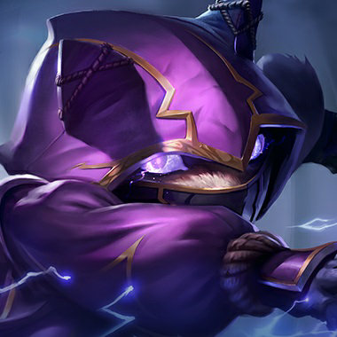Kennen the Heart of the Tempest
You can stun your opponents by inflicting 3 Marks of the Storm upon them
Lightning Rush can be used to initiate fights with its Energy return component, allowing him to use other abilities afterward
You can land an initial Mark of the Storm debuff on an opponent with Thundering Shuriken, and then add to it with Electrical Surge
Consider playing a bit more cautiously around Kennen when you have a Mark of the Storm debuff. If he hits you with 3 Marks of the Storm, you will get stunned
Kennen is flimsy by nature - turn and attack him if he gets careless with Lightning Rush

Kha'Zix the Voidreaver
Enemies are considered isolated if they have no allies within a short distance. The damage of Taste Their Fear is massively increased against these targets
Unseen Threat activates when Kha'Zix cannot be seen by the enemy team. Reactivate by using brush or Void Assault. Don't forget to apply Unseen Threat by autoattacking enemy champions
Kha'Zix has a great deal of freedom to choose where and when to fight. Pick your battles carefully to succeed
Taste Their Fear deals bonus damage to targets that are isolated. Gain an advantage by fighting near allied minions, champions, or turrets
Leap and Void Assault have long cooldowns. Kha'Zix is very vulnerable when these are not available

Kindred The Eternal Hunters
Moving around between attacks while jungling will help you avoid damage and also generate more heals from Wolf's Frenzy
Pick which Hunts you want to pursue carefully; getting many of them is the key to success as the game goes on
Don't go in first to a large team fight. Wait for your teammates to initiate
Kindred is fragile - turn the pressure up on her, and she will be forced to play cautiously
Clear the Hunts Wolf activates on jungle camps to slow down Kindred's damage output
When Kindred uses Lamb's Respite get inside, it stops all champions from dying
Kled the Cantankerous Cavalier
Kled generates some courage by killing minions, but gets much more from fighting Champions
The last hit of Violent Tendencies deals more damage than the first three - make sure you hit it!","Chaaaaaaaarge!!! can be cast at a great range. Try and predict where the enemy team will be by the time you reach them
Kled generates courage by damaging enemies with his Pocket Pistol and basic attacks, killing minions, and attacking structures or epic monsters
Watch Kled's courage bar when he's off his mount - when it reaches 100%, he will remount and regain a significant amount of health
Kled is much more threatening when he has Violent Tendencies ready
Kog'Maw the Mouth of the Abyss
Kog'Maw can outrange most champions with his Bio-Arcane Barrage ability
Use Void Ooze to set up a perfect Living Artillery
Make the most out of your Icathian Surprise
Kog'Maw doesn't have a good escape ability, so he is especially prone to ganks
Run away from Kog'Maw after he dies!!!!","The range on Living Artillery increases each rank
Bio-Arcane Barrage allows Kog'Maw to kill Baron Nashor extremely early. It can be valuable to ward Nashor when Kog'Maw completes his Blade of the Ruined King
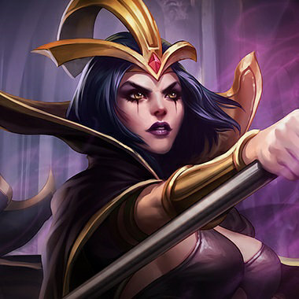LeBlanc the Deceiver
Distortion allows you to be aggressive with your other spells while being able to return to safety
Using Distortion can help your positioning to land Ethereal Chains
You can chain Sigil of Malice and Ethereal Chains to prevent characters with blink from escaping for up to 4 seconds
LeBlanc's ultimate can create fake LeBlancs during her spellcast or, rarely, at a distant position. ","The fake LeBlanc created at a distance will always run at the nearest Champion, cast a harmless spell, then immediately disappear
Attacking LeBlanc first avoids most of her tricks, especially if she's recently used her dash, Distortion
Stunning or silencing LeBlanc will prevent her from activating the return part of Distortion
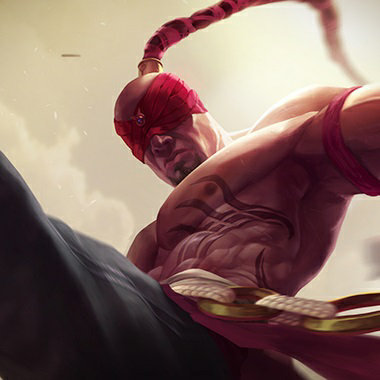Lee Sin the Blind Monk
Use Sonic Wave before Dragon's Rage so you can chase the target with Resonating Strike
Take advantage of Flurry by weaving in basic attacks between spell casts - this maximizes damage output and minimizes Energy loss
Self-casting Safeguard and using Iron Will are powerful tools for killing neutral monsters (in the jungle)
Stay spread out to minimize the impact of Lee Sin's ultimate, Dragon's Rage
Lee Sin has powerful tools to combat physical damage in Iron Will and Cripple but he is still vulnerable to magic damage
Lee Sin relies heavily on following up with his abilities. Use disables to prevent him from chaining together his abilities and attacks

Leona the Radiant Dawn
Lead the charge and mark your foes with Sunlight before your allies deal damage
Shield of Daybreak and Zenith Blade form a powerful offensive combo
You can absorb a huge amount of damage using Eclipse, but you must stay near enemies to gain the bonus duration
When Leona activates Eclipse, you have three seconds to get away from her before she deals damage
Only foes in the center of Solar Flare get stunned, so you can often avoid this if you're quick
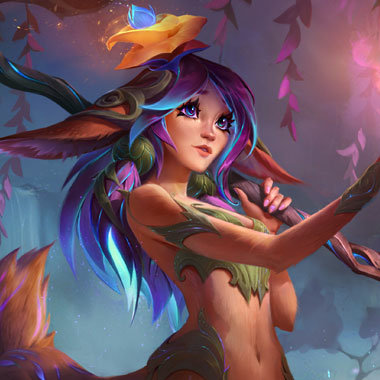Lillia the Bashful Bloom
Waiting for update
Waiting for update
Lissandra the Ice Witch
You can instantly use your ultimate on yourself by pressing the self cast key and the ultimate key at once (alt+R by default)
Casting Glacial Path and then running in the opposite direction will leave your enemies uncertain which way you will actually go
Lissandra's abilities are shorter range than those of many mages. As a result, buying items that offer both ability power and defense, like Zhonya's Hourglass and Banshee's Veil, can be a great choice to help her both survive and deal damage
The best way to stop Lissandra from moving using her Glacial Path is to immobilize her before she reactivates it
Lissandra's Ring of Frost has a long cooldown at early ranks; engage her while it's on cooldown
Lissandra's Ice Shard only slows the first unit it hits. Approach Lissandra from behind your team's minions to avoid being slowed

Lucian the Purifier
For optimal burst, try to combine Relentless Pursuit into Piercing Light
Ardent Blaze actually explodes in a star pattern. Try to line it up so the spokes hit enemy champions
Once you have chosen an angle for The Culling, you cannot change it. Pick your moment well!","Because of Lightslinger, Lucian benefits more from Attack Damage than he does from Attack Speed
Lucian has strong burst, but little sustained damage
Lucian cannot change the aim of The Culling. Take advantage of this by avoiding the angle of the bullets
Piercing Light does not give Lucian extra Attack Range. He still needs to find a target in range to line up his shot. Avoid Piercing Light by anticipating the angle Lucian will choose
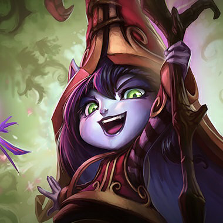Lulu the Fae Sorceress
Glitterlance can be fired at odd angles depending on where your cursor is - Moving your cursor closer to Pix and Lulu will change your area of effect size considerably
Consider casting Help, Pix! on ranged attackers for the Pix boost and Wild Growth on Tanks or Fighters for the added initiation power
The shots from Lulu's faerie can be intercepted - hide behind your minions to avoid the additional Faerie attacks
Lulu excels when opponents heavily commit. Don't give her this chance! Use heavy harass tactics instead to force Lulu and her partner out of lane

Lux the Lady of Luminosity
Lux has great zone control abilities. Try to set up Lucent Singularity to prevent an enemy's advance or escape
If you have trouble landing Prismatic Barrier, remember that it returns to you after it reaches max range. Try positioning yourself to hit your allies with its return trip
Lucent Singularity is a great scouting tool. Try throwing it into brush before walking into it to check for ambushes
Lux has powerful zone control abilities. Try to spread out and attack from different directions so she cannot lock down a specific area
When retreating with low health, be prepared to dodge Lux's Final Spark, a red targeting beam fires prior to the main beam, so try to move to the side if possible

Malphite Shard of the Monolith
Armor naturally reduces the rate that attacks go through Granite Shield, so Brutal Strikes will strengthen the shield against physical damage
Despite his abilities scaling on Armor, some games require Malphite to get Magic Resist. When those games occur, try getting Aegis of the Legion, Mercury's Treads, and Guardian Angel
If you're a physical damage character stay behind your allies when fighting Malphite. Ground Slam can significantly reduce your damage output
Malphite is one of a couple tanks who are capable of jungling. Watch out if he gets Smite

Malzahar the Prophet of the Void
Wait to cast Void Swarm until there are nearby enemies for the Voidling to attack or kill
Use Call of the Void and Nether Grasp to renew the duration of Malefic Visions on enemies
Avoiding damage in lane maximizes the uptime on Void Shift, increasing Malzahar's safety dramatically
When Malzahar hits a spell on enemies affected by Malefic Visions, the Visions are refreshed
Avoid minion waves that have been affected by Malefic Visions. You never know when they may die and pass the Visions onto you
Malzahar is especially dangerous when he has built up his Void Swarm

Maokai the Twisted Treant
Saplings can be tossed into brush for empowered effect - but don't stack well
Try looking for flanks or other situations where Nature's Grasp is unavoidable or takes enemies by surprise
Maokai's passive makes him extremely durable against focus fire from spells - so long as he can still basic attack something
Saplings will chase the first enemy that gets too close, but detonate after a few seconds or if they collide with other enemies. Be especially careful around brush sapling, as they are much more dangerous
The cooldown on Maokai's self healing is heavily gated on how many time you hit him with spells. Careful about wasting abilities on him
Maokai will avoid taking damage while he's using Twisted Advance, so don't waste your spells
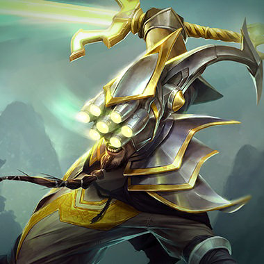Master Yi the Wuju Bladesman
If you're in a lane against ranged players, leveling up Meditate can allow you to stay in the lane longer and gain levels faster than they will
Wuju Style is very strong early for last hitting minions
Try using Alpha Strike on a minion in front of an enemy champion so you are placed at a safe distance at the end of the spell
Meditate is an effective method of healing damage over time, but Master Yi is susceptible to coordinated team ganks early in the game
If Master Yi tries to farm with Alpha Strike, hit him a few times so he has to use mana with Meditate to heal
Although Master Yi cannot be slowed while using Highlander, other disables can stop him in his tracks

Miss Fortune the Bounty Hunter
Miss Fortune ramps up speed if she hasn't recently taken damage. Avoid getting hit to move very fast
Use Double Up on the furthest enemy minion if enemy champions are hiding in back; it will bounce to them for lots of damage
Make sure to utilize Love Tap while Strut is on cooldown to maximize the active's availability
Miss Fortune's speed boost is removed if she is damaged by an enemy
Miss Fortune is easy to kill if you can reach her; target her first in team fights

Wukong the Monkey King
Decoy and Nimbus Strike work well together to quickly strike your enemy and get out before they can retaliate
Try using Decoy near brush to make an enemy overreact to your movement
Wukong will often use Decoy after Nimbus Strike. Try delaying your abilities by a short amount of time to ensure that you're hitting the real Wukong
Wukong becomes tougher to kill when surrounded by his enemies. Try to isolate him to gain an advantage

Mordekaiser the Iron Revenant
Offense is your defense. Keep fighting to build up larger Indestructible shields
Hitting multiple champions with the same ability can help quickly activate Darkness Rise
Use Realm of Death on a low health enemy to guarantee the kill and keep their stats for the rest of a teamfight
Mordekaiser builds up a powerful damage aura when fighting champions, so keep your distance
Damage he deals can be converted into a large shield, and consumed for health","Realm of Death will cut you off from your teammates completely. Try to save mobility spells to escape Mordekaiser once insid

Morgana the Fallen
Shrewd use of Black Shield can determine the outcome of team fights
Items that provide survivability allow Morgana to become extremely difficult to kill in conjunction with Black Shield and Soul Shackles
Tormented Shadow is an excellent farming tool if you're by yourself in a lane
Tormented Shadow deals tons of damage to units missing large amounts of Health. When low on Health, be wary of Morgana's attempts to trap you within its reach
Morgana often needs to land Dark Binding to setup her other attacks. Use your minions as shields against Dark Binding
Black Shield makes Morgana immune to disabling effects, but can be broken with magic damage
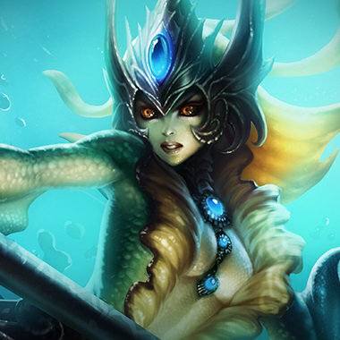Nami the Tidecaller
Aqua Prison has a long cooldown, make sure to use it at the right moment
Using Ebb and Flow during an engagement with enemy champions will help sway the battle in your favor
Nami's ultimate can come in very handy for initiating on enemies who are far away
Aqua Prison is a very powerful ability with a long cooldown, take advantage of the situation if Nami misses this ability
Tidal Wave has a very long range but travels slowly, be aware of when it is coming your way as you can move out of its path
Try to avoid fighting an opponent affected by Tidecaller's Blessing, it lasts a short duration so waiting it out can help you greatly

Nasus the Curator of the Sands
Paying attention to last hitting with Siphoning Strike will have a large impact at the end of a game
If you're solo, Spirit Fire is a great way to farm a lane. It can be bad if you're in a lane with 2 and you push too far. Find the right balance between Siphoning Strike last hits and AoE farming
If you have low defenses, people will focus you down even during your ultimate. Try buying some survivability items even in your DPS builds
While transformed by his ultimate, Nasus is stronger than most champions in the League. Engage him only if you have a clear advantage
Max rank Wither is a very effective counter to Attack Damage characters, so try to avoid getting caught alone by it
Nasus is prone to being kited. Try not to engage him at full Health
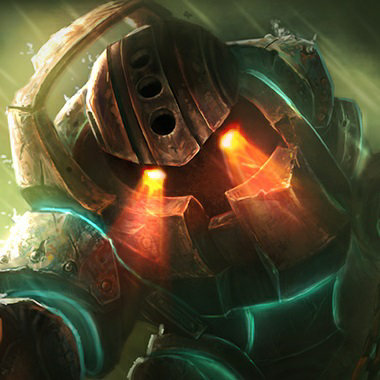Nautilus the Titan of the Depths
While ganking, consider aiming Dredge Line at nearby terrain and following it up with Riptide for a higher hit rate
Riptide has a delayed blast timing on activation - you can use this while running away or when enemies are incoming to serve as a deterrent
If Nautilus uses Riptide right next to you, hold in place until the ripple effect finishes before running. Running early will run straight into the secondary explosions, causing you to take additional damage and slow
While Nautilus is shielded, he is capable of dealing large amounts of area of effect damage with his basic attacks - consider taking down the shield if you have time
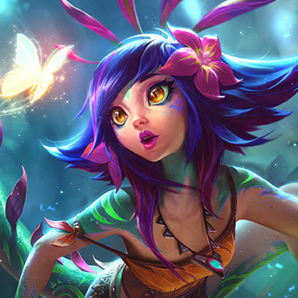Neeko the Curious Chameleon
You can set her passive to use hotkeys in the options menu. The default is Shift+F1~F5","Try to use Inherent Glamour sparingly, ineffective uses will put enemies on the alert
Standing behind minions against Neeko is very dangerous as Tangle-Barbs become stronger
Pop Blossom's warning visuals are invisible if Neeko is disguised

Nidalee the Bestial Huntress
Use brush to your advantage! Moving in and out of brush can heavily alter your effectiveness in battle
Start team fights by harassing with your Javelin Toss, and then switch to cougar form to chase down Hunted targets
Bushwhack traps deal damage based on their victim's current Health. Set them up in your team's backline before fights break out during sieges to help your team deal damage to the enemy frontline
Nidalee's Hunt debuff is only applied with Javelin Toss and Bushwhack. Avoiding being hit by these abilities will impair her ability to deal follow-up damage
Nidalee's Javelin Toss deals more damage the farther she is. If she is far away, it's imperative to dodge it
Nidalee's Takedown deals extreme damage to Hunted targets, but she has to get close to use it. Save your crowd control or defensive abilities for when she goes in for the kill

Nocturne the Eternal Nightmare
Using Paranoia at a critical moment is well worth it even if you cannot use the dash
Duskbringer isn't only an offensive ability. It can be used to close distance out of combat or escape from certain death
Use Shroud of Darkness in tandem with Paranoia's dash. Your opponents may panic and waste a critical disable on your spell shield
Stay close to your allies when Paranoia is cast - there is strength in numbers!","Nocturne's Unspeakable Horror is broken with range, so try to save your movement abilities for when he casts it

Nunu & Willump the Boy and His Yeti
Consume allows Nunu to stay in a lane against ranged opponents
You can choose to interrupt Absolute Zero early for partial damage if an opponent is about to run out of range
It's often beneficial to delay the casting of Absolute Zero until the initial round of disables are used. Try to hang back before rushing into a team fight
Interrupting the charge up on Absolute Zero will lower the amount of damage your team takes
Using Summoner Flash is a surefire way to escape Absolute Zero
Biggest Snowball Ever moves very fast but cannot turn as quickly, so don't try to escape it by running away in a straight line. Instead, make sudden, sharp turns

Olaf the Berserker
Olaf can combine Berserker Rage, Vicious Strikes, and Ragnarok at low life to become deceptively strong
The bonus healing granted by Vicious Strikes amplifies your Life Steal from all sources as well as heals from allies
Olaf becomes more dangerous the lower life he is. Save your disables to finish him off
Preventing Olaf from reaching his axe will minimize the amount of harassment he can cause in the laning phase
Olaf has reduced defenses from damage during Ragnarok, despite being immune to disables. If you can't escape from Olaf during Ragnarok, try focusing your damage on him with your teammates

Orianna the Lady of Clockwork
Command: Protect can be used on yourself to return the Ball back to you quickly. Combine this with Command: Attack for a quick harassment
Command: Dissonance is a very powerful escape tool if Orianna has the Ball. The combination of speed and leaving a slowing obstacle can be quite powerful
Command: Shockwave can be used to drag enemies towards you or away from you if you position the Ball properly
Orianna can only affect the area the Ball is around. Use this to your advantage
Watch out for Orianna's Ball returning to her due to leashing. This may cause some unexpected situations

Ornn The Fire below the Mountain
Learning build paths of items can help quickly select upgrades in lane
Volcanic Rupture can be used to set up zoning areas to threaten enemies
The order of your abilties matters! Try to optimize Brittle usage
Try to stay away from walls. Ornn is much less strong if he cannot stun you
Attack Ornn to keep him from creating items in lane

Pantheon the Unbreakable Spear
Mortal Will activates after 5 spells or basic attacks - plan your way through fights to allow you to activate it more than once
Whittle the enemy down with Comet Spears before you jump in
If an enemy is going to get out of range of your Aegis Assault, you can recast the spell to immediately fire the shield slam
Pantheon's Aegis Assault makes him invulnerable from the front. Get behind him or wait it out
Be careful near Pantheon if your health is low - a thrown Comet Spear executes low health enemies
Grand Starfall gives several seconds of warning before Pantheon arrives. Use this time to get out of the way or to form a plan to deal with him

Poppy Keeper of the Hammer
Iron Ambassador tends to land near walls, try to take advantage of this with Heroic Charge
Keeper's Verdict can be released immediately to send the enemy straight up, take advantage of this in duels
Poppy can stop nearby enemies from dashing with Steadfast Presence
When Poppy starts to spin her hammer, she is charging Keeper's Verdict
You can step on Poppy's shield to deny it from her

Pyke the Bloodharbor Ripper
Pyke is very fragile so don't be afraid to temporarily run from a fight. You can regenerate a significant amount of health from Gift of the Drowned Ones when enemies can't see you
Hitting an enemy with the Hold version of Bone Skewer will always pull them the same distance. Use it in melee range to throw targets behind you
The Tap version of Bone Skewer is much faster and deals additional damage
A lot of your agressive spells are also your escapes. Make sure you always have a plan to get out of the fight
Pyke regenerates a significant amount of damage he has taken from enemy champions, but only when you can't see him!","When Pyke is hidden nearby in his Ghostwater Dive, sharks will circle underneath your feet
Try not to stand near low health allies. If Pyke executes them using Death From Below, you might be next on the list

Qiyana Empress of the Elements
Waiting for update
Waiting for update

Quinn Demacia's Wings
Attacking a ","Vulnerable"," target marked by Valor will put Harrier on cooldown. Quickly consuming Harrier marks will allow you to generate them faster
Vault is powerful but must be used with caution, as enemies can attack Quinn when she strikes them. Vault can sometimes be used to cross terrain if your back is to a wall
Use Behind Enemy Lines for traveling very long distances quickly, for farming minions around the map, or for chasing wounded targets
After being marked, move away from Quinn so she can't take advantage of it
Keep tabs on Quinn's position. Behind Enemy Lines can enable Valor to cross the map very quickly and attack you by surprise
When Quinn is using Behind Enemy Lines, damaging her removes her Move Speed bonus temporarily

Rakan The Charmer
Rakan requires allies near him to make the most out of his tools
Rakan's dash speeds increase with his Move Speed. Use the extra speed to surprise your enemies!","Danger is as fun as you let it be
Rakan's movement abilities forecast their destination. Try to use this to your advantage
Champions with crowd control that can be applied quickly excel against Rakan
Catching Rakan with no allies around severely inhibits his mobility. Try to find him alone

Rammus the Armordillo
Powerball can be used as an effective escape mechanism
Using taunt on a champion by your tower can cause the tower to attack your enemy
Tremors and Defensive Ball Curl can be used late in the game to obliterate towers. If you're bogged down in a team fight, it is often valuable to break off and attack the buildings
Pay particular attention to when his Defensive Ball Curl is off. Rammus has much lower stats than a normal tank when he's out of the stance
Rammus often stacks high Armor, leaving him especially vulnerable to caster damage while not in Defensive Ball Curl

Rek'Sai the Void Burrower
Keeping tunnels spread out across the map will ensure you have choices when you want to cast Void Rush
Cast Burrow before travelling around the map to take advantage of the increased Move Speed and the safety provided by Tremor Sense
Tremor Sense can warn you of enemies closing in, and is particularly useful when entering enemy territory
If you see one of Rek'Sai's tunnels, briefly stand on one of the entrances to destroy it
Rek'Sai's Furious Bite gains damage as she builds Fury. Be very careful around her when her Fury is full
When Rek'Sai is near, she can see the position of you and your allies, but only if you're moving

Rell the Iron Maiden
Waiting for update
Waiting for update
Renata Glasc the Chem-Baroness
Waiting for update
Waiting for update
Renekton the Butcher of the Sands
Slice and Dice excels at harassing maneuvers. Slice in, follow up with another skill and then Dice back out to safety
Cull the Meek drains an enormous amount of life when used in the middle of the fray. You can use this to bait opponents into thinking you are weaker than you really are
Cooldown reduction is especially good for Renekton, allowing him to both quickly build up and use his Fury
Pay close attention to Renekton's Fury gauge as that will usually signify when he is about to attack
Keeping Renekton from being able to fight and gain Fury by continually harassing him will severely reduce the effectiveness of his abilities

Rengar the Pridestalker
Use Rengar's ultimate to find and assassinate high priority targets in team fights and skirmishes
A lot of Rengar's power comes from empowered abilities he uses at the right moment - choose wisely!","Make sure to take paths through brush when chasing opponents to take advantage of Rengar's passive
Rengar gains an empowered ability when his resource bar is full. Try to confront him when it's low
Rengar's passive enables him to leap out of brush, so avoid fighting him when near bushes
Rengar puts an indicator over the nearest enemy champion when he is camouflaged during his ultimate

Riven the Exile
Riven's Broken Wings locks onto the champion your cursor is over at the time of cast. If you want to move past your opponent, make sure that your cursor is past your opponent as well
Riven lacks a source of healing or strong defense and must compensate with burst combos. Lead into fights with Broken Wings and Ki Burst, while using Valor to escape and absorb counter-harass
Riven has a great deal of mobility but she cannot move very far with any one skill. Rooting or silencing her during her combo will greatly reduce her effectiveness
All of Riven's damage is physical, prioritize high Armor if an opposing Riven gets out of control
Riven excels at dueling multiple melee attackers at once, as she will be on an almost equal footing damage-wise. If pairing up against Riven, don't go in as double melee until she has expended her full combo

Rumble the Mechanized Menace
Try and pace yourself to stay in the Danger Zone to maximize your effectiveness. It is easy to overheat if you rapidly use your abilities
Try and keep targets in the range of your Flamespitter. It can deal a lot of damage overtime
If you are winning a fight you can use your ultimate to wall off an escape path
Watch Rumble's Heat bar carefully. If you see him Overheat, go in for the kill while his skills are disabled
Rumble's ultimate can deal a lot of damage if you stay inside the area of effect. When you see the missiles falling, move out of the way as quickly as possible
Rumble deals almost entirely magic damage. Build some Magic Resistance to reduce his damage

Ryze the Rune Mage
Use Overload's passive to optimize for maximum damage or maximum speed
Spell Flux's short cooldown allows it to be used to spread Flux to many enemies
Ryze can move and cast other spells while Realm Warp is charging without cancelling the portal
Ryze is especially dangerous to opponents that are marked with Flux
Use Realm Warp's windup time to figure out how to deal with what may be coming out of the portal
Crowd controlling Ryze during Realm Warp's windup will cancel the portal
Samira the Desert Rose
Waiting for update
Waiting for update

Sejuani Fury of the North
Use Arctic Assault to escape bad situations, interupt channeled spells or chase runners
Melee allies can stack Frost for your Permafrost, keep an eye on who they are attacking
Save Glacial Prison for encounters where you have teammates present to take advantage of it
Dodging Arctic Assault and Glacial Prison can give you a huge advantage
Focus on avoiding the second swing of Winter's Wrath which carries the brunt of the damage
Melee enemies can also stack Frost for Sejuani, be very careful around them
Senna the Redeemer
Waiting for update
Waiting for update

Seraphine the Starry-Eyed Songstress
Waiting for update
Waiting for update

Sett the Boss
Waiting for update
Waiting for update

Shaco the Demon Jester
Using Deceive over terrain can help you make a clean escape
Try getting items with on-hit effects. These will also benefit your Hallucination clone
Backstab's damage can be increased with increased Critical Damage effects like Infinity Edge
If Shaco is doing well early-game, it is worth the investment to place Stealth Wards near his Jungle camps
If Shaco uses Deceive to enter a fight he won't be able to quickly use it again to get away. Work with your team to quickly focus him down
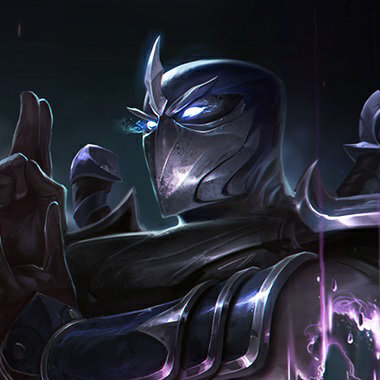Shen the Eye of Twilight
Keep an eye on allies and be ready to save them with your teleport
Leverage your Energy to get a long-term advantage over Mana users
Be ready to dodge Shen's taunt and punish him if he misses
Once Shen reaches level 6, watch out for his global-range ultimate, which can turn fights quickly
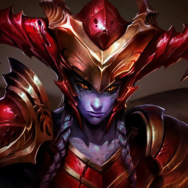Shyvana the Half-Dragon
Shyvana's abilities all benefit from attacking units. As a result, Attack Speed items are more valuable on her than most champions
Flame Breath is great to level-up against difficult lane opponents
Burnout is an ideal choice for jungling. Monsters will be hit by the full duration, and the speed boost improves her ganking potential
It can be valuable to purchase one of the items that can slow enemies: Frozen Mallet, Dead Man's Plate, or Entropy
A significant portion of Shyvana's power is generated through aggression, making her weak against opponents who are able to keep their distance
All of Shyvana's basic abilities hit multiple enemies in dragon form. It's important for opposing champions to not cluster while fighting her
Shyvana's Fury Bar indicate her ultimate can be activated. Harassing her when she's low on Fury can be very effective
Singed the Mad Chemist
Poison Trail is very effective at farming and harassing, allowing Singed to dominate the flow of whatever lane he's in
Use Insanity Potion to trick your opponents into chasing you through your Poison Trail
Flinging enemies into your tower can deal heavy amounts of damage to them
Keep your distance to avoid being Flung back into Singed's allies
Singed needs to run close to your team to be effective. Try to take advantage of this by using crowd control effects on him while attacking his allies
Be careful when chasing Singed. He's very difficult to bring down, and can leave his Poison Trail to damage you in your pursuit

Sion The Undead Juggernaut
You only have very slight turning ability during Unstoppable Onslaught, so make sure to use it in straight paths
Roar of the Slayer is a great setup ability to land a very powerful Decimating Smash
The Soul Furnace buff displays how much shield strength is remaining, use this information to time its explosion perfectly
Even if Sion still hits a Decimating Smash, making him release the charge earlier reduces its impact
Use the time after Sion has died to reposition and prepare for his return

Sivir the Battle Mistress
Sivir's Boomerang Blade returns to her after reaching the max range, so you can shift position to hit enemies who would otherwise have evaded it
Ricochet resets Sivir's basic attack timer on activation, so activating this immediately after landing a normal basic attack will maximize damage output
Try saving Spell Shield for enemy abilities that can disable you such as stuns and roots
Boomerang Blade costs a lot of mana to cast, so dodging it sets Sivir back. If it hits you on the way out, avoid its path on the way back
Sivir is a powerful pushing champion, so leaving her unattended in a lane for too long will often result in your turrets being destroyed
When laning against Sivir, it is possible to throw off the timing of her Spell Shield by faking an advance, then backing off

Skarner the Crystal Vanguard
Basic attacks reduce the cooldown of Crystal Slash. Use them as often as possible for maximum damage
Capturing Crystal Spires before attempting neutral objectives or team fights around them improves Skarner's performance in said fights dramatically
Impale is extremely powerful when you use it to position an enemy so your allies can attack them
Skarner can't harm you very much outside of short range, so stay away from him!","Skarner's Move Speed is increased as long as his shield, Crystalline Exoskeleton, persists. Attack him to lower his speed
Skarner is especially dangerous when inside Crystal Spire zones his team controls. Try to capture them ahead of time if a fight may break out around them

Sona Maven of the Strings
Make sure to tag your allies while Sona's auras are active, but avoid getting caught out by enemies
Save Crescendo for the game-altering moment
Well-timed uses of Aria of Perseverance will grant you maximum survivability
Spread out when you see Sona so she can't make your entire team dance
Kill Sona first, as she will heal up her team if left alone for too long

Soraka the Starchild
Soraka is a powerful ally in battle, using her strong healing to keep the party moving forward
You can use Wish on your allies from across the map to save them from otherwise fatal events
Equinox can be used as a powerful zoning tool to keep enemies at bay
Focus on attacking Soraka when she ever ventures to the frontline to heal her allies
Take advantage of Soraka's long cooldown on Equinox if she uses it to harass
It's easier to focus Soraka than the ally she is healing

Swain the Noxian Grand General
If you're having trouble rooting an enemy with Nevermove, try throwing it at opponents when they are near their minions so the explosion surprises them
While laning, try to use Death's Hand's piercing damage to damage opponents from a safe distance
Vision of Empire is quite difficult to land on its own, look for skirmishes around the map where enemies may be distracted or crowd controlled so you can land it more easily
Demonic Ascension may make Swain very hard to kill but he's pretty easy to get away from. Try building items that can slow opponents to keep them in range if their mobility is overwhelming
Swain's passive is very potent if you are immobilized. Make sure to be extra careful around enemies who have immobilizing effects
High mobility counters all of Swain's basic abilities: Death's Hand does more damage the closer he is, Vision of Empire has a very long delay and Nevermove must start returning back to him to be dangerous
Buying an item with Grievous Wounds will make Swain much easier to kill during his Demonic Ascension

Sylas the Unshackled
Wait for you or your enemy to reach low health before using Kingslayer for maximum effect
Space out your ability usage to get maximum effect from Petricite Burst
Clever use of enemy ultimates can open up new possibilities to approach teamfights
Sylas's healthbar can be deceptive, watch out for his Kingslayer!","Try to fight Sylas when he isn't able to take your ultimate

Syndra the Dark Sovereign
To maximize your ultimate's damage use it when there are many spheres on the battlefield
After you hit an enemy champion with Force of Will follow up with Dark Sphere, they'll be slowed and have a hard time avoiding it
Get one of your spells to rank 5 as quickly as possible, they gain powerful bonus effects at max rank
Get boots early when playing against Syndra, they'll help you avoid many of her spells
Attack Syndra after she's used Scatter the Weak, it has a long cooldown so she'll be vulnerable
At max rank Syndra's spells gain bonus effects and change in appearance

Tahm Kench The River King
Your most important function as a support is to keep fragile allies safe. Keep Devour's range and cooldown in mind and position accordingly!","Consider carefully when to use Thick Skin's active. Sometimes shielding early to avoid further damage is good, but sometimes the healing is more beneficial
When you see Tahm Kench use the shield from Thick Skin, remember that he just opted out of a good deal of healing. He will also not accumulate new gray health until Thick Skin comes off cooldown. Use this to your advantage!","Watch out for Kench's Abyssal Dive - you can cancel it's channel with immobilizing crowd control effects

Taliyah the Stoneweaver
Try to throw enemies into Unraveled Earth using Seismic Shove
Remember, you don't always have to ride Weaver's Wall
Once you have Rylai's Crystal Scepter, casting Threaded Volley at enemies chasing you is a great way of making them regret everything
When Taliyah casts Unraveled Earth in the lane, be on the lookout for Seismic Shove. If she throws you into her minefield, the throws and stones will break your bones
Taliyah's Threaded Volley is locked into a direction. If she's throwing rocks at you, dodge to the side

Talon the Blade's Shadow
You can use Assassin's Path to get behind the enemy and set up for Noxian Diplomacy's melee attack
Shadow Assault is a powerful escape tool, but can also be offensively used to assault a group
Remember to pick your target before the fight. Focusing all of Talon's abilities on one target can be very rewarding, but splitting them up between many may leave you helpless
Talon's attacks are all physical damage. Build armor early to counter his burst damage
Talon is heavily reliant on Shadow Assault to escape a fight. When it is down he's significantly more vulnerable
Talon has unrivaled roaming ability. Make sure to keep track of his position or force him to stay in lane by pushing aggressively

Taric the Shield of Valoran
The cooldown reducing component of Bravado makes Cooldown Reduction items like Frozen Heart, Iceborn Gauntlet, and Spirit Visage exceptionally powerful on Taric
Using Starlight's Touch at lower charges makes its healing less Mana efficient, but can greatly increase Taric's sustained damage via Bravado
Rather than saving Cosmic Radiance for the last moment and risking someone dying during the delay, it can be more beneficial to cast it as soon as you know a teamfight is guaranteed to start
Taric's ultimate, Cosmic Radiance, has a long delay before its effect. Try to quickly assess whether to disengage the fight or attempt to kill his allies before it goes off
Taric reduces his spell cooldowns by basic attacking enemies with Bravado. Try to kite him in teamfights and punish him for approaching the minion wave in lane
Teemo the Swift Scout
Teemo's mushrooms can be used to farm creep waves very effectively
Place your mushrooms at key locations on the map, such as by the Dragon or Baron Nashor, to reveal when your enemies might be attempting to kill them
Teemo's Toxic Shot punishes players who get hit and back out, so stay at a safe range until you're ready to commit
It can be valuable to use Oracle's Lens(Trinket) to destroy mushrooms around key locations

Thresh the Chain Warden
Communication is key when making use of Thresh's lantern. Let your teammates know how you like to use it
Death Sentence and Flay can be combined in either cast order for powerful combinations
Thresh can collect souls without needing to kill units himself. Planning your map position to be near the most deaths will help to maximize soul collection
Thresh's Death Sentence has a long cast time. Watch for the cast to begin to take evasive actions
Intentionally breaking a wall of The Box can allow a vulnerable ally to escape unscathed
Thresh relies on collecting souls for a portion of his defense and damage. Try punishing him when he moves to collect them

Tristana the Yordle Gunner
Her massive gun allows Tristana to fire on targets at a great distance. Utilize this to prevent your enemies from ever laying a hand on you
Use Rocket Jump after you have stacked up your Explosive Charge on an enemy to finish them off with a burst of damage
Use Rapid Fire to help stack up your Explosive Charge on enemy champions
If you see Tristana activate Rapid Fire in a fight, stun her and try to back off until the spell dissipates
Stand away from your creeps in a lane to take less collateral damage from Explosive Charge

Trundle the Troll King
Trundle excels at fighting within his Frozen Domain. Try to draw enemies onto it
Use Subjugate to soften a powerful enemy tank or to create a target for your team to focus fire
Chomp is good for lowering the physical damage of enemies; try to focus it on enemy physical damage dealers
Trundle is very powerful at location-based combat. Try to draw him off of his Frozen Domain
Make sure to get out of his Pillar of Ice as quickly as possible, as it significantly slows you down

Tryndamere the Barbarian King
Delaying the activation of Undying Rage is a very effective way to make an enemy champion over-commit to trying to kill you
Bloodlust is an excellent way to heal Tryndamere. Try not to let it fade off before you activate it
If the enemy is stacking Armor, try building items like Last Whisper or Youmuu's Ghostblade
Try harassing Tryndamere early so he can't kill minions and heal with Bloodlust
Remember, Tryndamere can only slow you if you are facing away from him
Most of Tryndamere's damage is physical. If he's getting too strong, consider buying a Thornmail

Twisted Fate the Card Master
Coordinate with your allies for the best time to use Destiny to ambush enemies
Stealth characters often escape a battle with very low hit points. Take advantage of Destiny's ability to reveal stealthed units to finish them off
Twisted Fate is viable as an Attack Damage or Ability Power character, letting him fit on many different team compositions
Focus on dodging Wild Cards early when your champion doesn't have the hit points to afford getting hit
If you have low Health, use Destiny as an indicator to run to safety. It will give you a head start in escaping any possible ganks

Twitch the Plague Rat
Twitch's Attack Speed is among the highest in the game; try purchasing items with on-hit effects such as Black Cleaver or Wit's End
Contaminate has a large range; apply as many stacks of Deadly Venom as possible before using it
You can catch up to an enemy out of attack range with Venom Cask
Twitch is fragile. Work with teammates to focus on him when you're able to catch him out of Camouflage
Spell Shields won't block the damage from Deadly Venom, but they will block the effects Twitch can trigger with it
If you suspect Twitch has left the lane, let your teammates know that Twitch is ''MIA.'

Udyr the Spirit Walker
Damage is applied to turtle shield post-mitigation. Therefore, buying defensive items can drastically increase your survivability
Udyr is one of the best junglers in the game. Taking advantage of this can give your team a large XP advantage and map control
Udyr players will often start in the jungle and only appear to gank in lanes. Try warding key locations to keep track of his movement
Once the initial shield effect has faded, Turtle Stance is weak against other champions. Press the attack to force him to switch stances and prevent him from regenerating health
Some Udyr players buy tank items to become very durable. If they do, focus their weaker teammates instead

Urgot the Dreadnought
Pay attention to your individual leg's cooldowns, as they make for a signficiant portion of your damage","Land Corrosive Charge or Disdain to lock on to target's with Purge - a great way to trigger multiple legs in rapid succession
Save Fear Beyond Death for opponents you know are already too weak to survive. It's especially good for picking off fleeing foes
Urgot relies heavily on blasting opponents with his legs, which have their own cooldowns and only detonate when he attacks in the direction they are facing. Avoid getting hit by multiple
Urgot can deal and absorb tremendous amounts of damage with Purge, but slows himself while firing
If you are struck by Fear Beyond Death, do your best to avoid falling below the execution threshold (25% of your Maximum Health) until the effect times out

Varus the Arrow of Retribution
An early point in Blighted Quiver helps harass enemy champions and get killing blows on minions
During short range fights it's sometimes best to fire Piercing Arrow quickly, rather than charging it to full power
Try to take advantage of Piercing Arrow's very long range to snipe at enemy champions before a fight or as they're trying to flee
If you are affected by Blight, Varus' abilities will deal extra damage to you
When he gets a kill or assist, Varus temporarily gains Attack Speed and is much more dangerous
You'll get bound in place if a tendril from Varus' ultimate, Chain of Corruption, reaches you. You can cause the tendril to die however by running far enough away from it

Vayne the Night Hunter
Tumble has many uses, but it cannot pass over walls
Condemn can be used to both pin targets to walls to ensure a kill, or to escape a pursuer
Don't go in first to a large teamfight. Wait for your teammates to initiate
Vayne is fragile - turn the pressure up on her and she will be forced to play cautiously
Deny Vayne the opportunity to pin you against walls

Veigar the Tiny Master of Evil
Use Event Horizon to increase your chances of landing Dark Matter
Veigar is extremely Mana and Cooldown Reduction dependent. Try buying items with these stats in order to increase the effectiveness of your passive and Baleful Strike
Veigar is very fragile. It is valuable to select at least one summoner spell that can be used defensively
Dark Matter deals very high damage, but it can be avoided. Pay attention to the sound and visual indicator to be aware of when and where the spell will land
Event Horizon only stuns units on the edge. If you're inside the spell, you can still move and attack
Veigar's ultimate deals increased damage based on your missing health

Vel'Koz the Eye of the Void
When laning, use Void Rift to kill minions while building stacks of Organic Deconstruction on your opponent. You can then follow up with your other abilities
Shooting Plasma Fission diagonally and splitting at maximum range allows you to hit opponents that are out of the range of the initial missile, but is more challenging to pull off
Be very careful about when to use Life Form Disintegration Ray. Many champions have abilities that can interrupt the spell
Vel'Koz is very dangerous if left alone in a fight. Try to focus him down early
Vel'Koz has fairly low mobility and is vulnerable to ganks
Life Form Disintegration Ray can be interrupted by stuns, silences and knockups
Vex the Gloomist
Waiting for update
Waiting for update
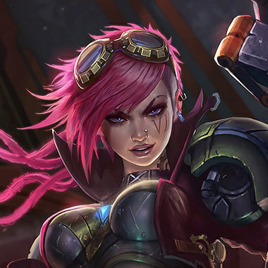Vi the Piltover Enforcer
A fully charged Vault Breaker will deal double damage. It's great for catching and finishing off fleeing enemies
Relentless Force does full damage to anyone caught in the shockwave. Use it on minions in lane to hit enemies hiding behind them
Cease and Desist is a powerful initiation tool, just remember not to get too far ahead of the rest of your team
A fully charged Vault breaker deals double damage. If you see Vi start to charge you should back off or try to dodge it
Vi will shred your Armor and gain Attack Speed if she manages to hit you three times in a row. Try not to engage in extended brawls with her
Vi cannot be stopped while using her ult. Remember to save your displacement effects until after she's done charging
Viego The Ruined King
Waiting for update
Waiting for update
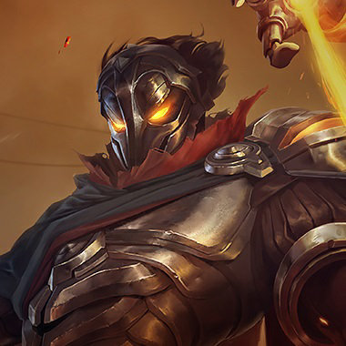Viktor the Machine Herald
Death Ray is a powerful poke and a strong area of denial tool. Use it in combination with Gravity Field to control your enemy's position
Make sure you choose the right augment at the right time
Be careful about how close you let Viktor get to you. Viktor's control of the battlefield increases with his proximity to his opponent
Be aware of how many augments Viktor has upgraded by looking at the color of the light on his staff (purple, yellow, blue, red)

Vladimir the Crimson Reaper
Transfusion instantly deals damage to the enemy before healing Vladimir, making it one of the best last hitting tools in the game
Cast Hemoplague where it will afflict the most units
Sanguine Pool pops incoming missiles, so it can be used to dodge disables
Try to take Vladimir down before Hemoplague detonates, as it will heal him for each afflicted enemy Champion
Making Vladimir use Sanguine Pool at the start of a fight will maximize the Health cost of the ability to him
Items that counter Health stacking, such as Liandry's Torment and Blade of the Ruined King, are very effective against Vladimir

Volibear the Relentless Storm
Waiting for update
Waiting for update

Warwick the Uncaged Wrath of Zaun
Follow your Blood Hunt trails to low health enemy champions
Infinite Duress (R)'s distance scales with any Move Speed you gain, even from ally buffs and summoner spells
Jaws of the Beast (Q) will follow enemies who run, dash or teleport if you keep the button held down
Warwick's attacks heal him at low health. Save your disables to finish him off
Warwick is empowered versus low health enemies. Manage your health to keep him at bay
Warwick's ultimate cast range scales with his Move Speed

Xayah the Rebel
Xayah's attacks and abilities leave Feathers on the ground that she can later recall for massive area damage and control
Xayah can use Featherstorm to dodge almost any ability while also creating a ton of Feathers. Try to utilize the offensive and defensive aspects of this ability
Xayah's Bladecaller will only root targets hit by 3 or more returning Feathers
Long fights in the same area with Xayah will allow her to drop a lot of Feathers. Try to stay on the move!","Make sure you are ready when you go for the kill. Untargetability from Featherstorm can quickly turn an ambush in Xayah's favor
Xerath the Magus Ascendant
It's easier to land Arcanopulse on an enemy when they're moving toward or away from you, rather than side to side
Eye of Destruction will make landing Arcanopulse easier as the target will be slowed
If you stun an enemy with Shocking Orb, follow up with a guaranteed center hit on Eye of Destruction
Xerath's range can be intimidating, but most champions who close distance with him can trade favorably
Xerath takes a long time to engage Rite of the Arcane. Watch for his spellcast animation and start dodging
Banshee's Veil will make it much harder for Xerath to land Shocking Orb on you
Xin Zhao the Seneschal of Demacia
Xin Zhao is a great initiator to combat. Lead the front to start a fight and use your ultimate to do the most damage possible
Try to position yourself so your ultimate's knockback is most effective
Xin Zhao is a powerful initiator with both his charge and ultimate dealing damage to all units around him. Try having your team stay spread out until he's used his ultimate
Xin Zhao relies heavily on his Three Talon Strikes for damage and cooldown resets, so preventing him from finishing his combo will have a dramatic effect

Yasuo the Unforgiven
Dash through a minion to have Sweeping Blade available to chase your opponent should they flee; Dash directly to your opponent to preserve a minion as your escape route
At level 18, Yasuo's Steel Tempest reaches its Attack Speed cap with 55% Attack Speed from items
Last Breath can be cast on any target that is knocked Airborne, even by one of your allies
Steel Tempest is very narrow. Dodge laterally if possible. ","When Yasuo lands two Steel Tempests in a row, his next will fire a tornado. Watch and listen for the associated sound to prepare to dodge
Yasuo is at his weakest just after he has launched a whirlwind. Engage at that point
Yasuo's shield from Resolve lasts only 2 seconds. Dealing damage to him will trigger it. Wait it out, then engage

Yone the Unforgotten
Waiting for update
Waiting for update

Yorick Shepherd of Souls
You do not need to cast Awakening to regain the ability to cast Last Rites
The Maiden will attempt to assist you in a fight, so choose your targets well
You can send the Maiden down a lane alone, be careful though, as she represents a large portion of your combat power
You can cast Smite on Mist Walkers and the Maiden of the Mist to damage or kill them
Try to thin out Yorick's minions before you engage him, Mist Walkers will die from a basic attack or a single target spell
You can attack Dark Procession to break the wall down

Yuumi the Magical Cat
Waiting for update
Waiting for update

Zac the Secret Weapon
Picking up goo chunks is very important to staying alive
When Cell Division is ready, try to die in a position that makes it difficult for the enemy team to kill your bloblets
Charging Elastic Slingshot from the fog of war will give opponents less time to react
Zac heals from the goo that separates from him. You can crush the goo pieces by stepping on them
Kill all of Zac's bloblets when he splits apart to stop him from reforming
Silences, stuns, roots and knockups will all interrupt Zac when he is charging Elastic Slingshot

Zed the Master of Shadows
Saving energy and spell cooldowns until you use your ultimate will maximize Death Mark's damage
Quickly double tapping Living Shadow will teleport Zed to his shadow immediately for rapid escapes
Placing a Living Shadow before using Death Mark can give Zed a safe escape from combat
Zed receives bonus effect from Attack Damage items he purchases, so Armor is super effective against him
After Zed uses his Living Shadow, he is at his most vulnerable as his damage, slow, and mobility are both dependent upon it
Zed's Shadow Slash can only slow you if his shadow hits you with it.
Zeri The Spark of Zaun
Waiting for update
Waiting for update
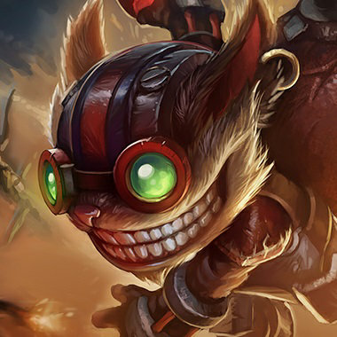Ziggs the Hexplosives Expert
Even if you're far from a fight you can still help from afar with Mega Inferno Bomb
Slowing your enemies with Hexplosive Minefield makes it easier to land other abilities
Knocking yourself over walls with Satchel Charge can be great when chasing after or escaping from enemies
Don't step on Ziggs' mines! They'll slow you and make it much easier for him to hit you with his other abiltiies
Many of Ziggs' abilities have long cooldowns. Try catching him just after he's used his abilities
Ziggs' ultimate, Mega Inferno Bomb, deals more damage in the center of the explosion
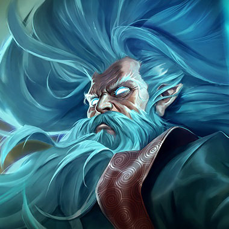Zilean the Chronokeeper
You can combine the use of Time Bomb and Rewind to place two Time Bombs on a target quickly. Placing the second bomb will detonate the first and stun all nearby enemies
Time Warp is an effective way to enable allies to finish off enemies, or escape from a losing battle
Chronoshift is a powerful deterrent to attacking your carries, but casting Chronoshift too early in a fight can cause the enemy to switch targets too soon, making it less effective
If you're able to match Zilean's speed, it can sometimes be beneficial to wait until his ultimate has faded before landing the killing blow
Zilean is fragile if a team focuses on him, but otherwise he's very difficult to kill. Commit to killing him as a team
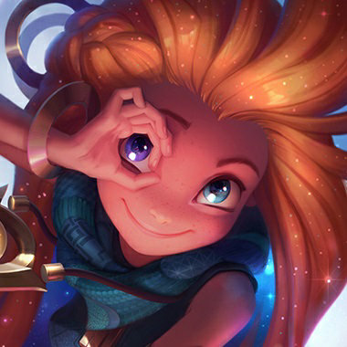Zoe the Aspect of Twilight
Paddle Star deals more damage the further it has flown. Casting it behind yourself before redirecting can deal tons of damage
Break Sleep with your biggest damage source, since enemies who are asleep take double damage
Sleepy Trouble Bubble travels further over walls. Find a hiding spot to set up for a long distance kill
Zoe's Paddle Star deals more damage the further it has flown
Zoe must return to her starting point after casting Portal Jump, making her vulnerable to a counterattack
Sleepy Trouble Bubble travels further over walls. Stop Zoe from hiding in fog of war to prevent her from setting the spell up

Zyra Rise of the Thorns
Placing a seed in your spell's path after you have cast it gives you the best chance of having a seed in the proper spot
Seeds grant vision to your team
Zyra is a great ambusher - look for opportunities to set a trap of seeds in brush, then lure enemies in
Zyra's seeds can be destroyed by stepping on them. If she tries to grow them as you do, dodge back at the last moment. ","Moving closer to Zyra can be a smart move if she places plants too far away from herself
Plants take fixed damage from attacks and effects, similar to wards. They also expire quickly on their own
Moving the fight to a different area will deprive Zyra of accumulated seeds
Seeds placed by Zyra's W are larger, a different color, and grant a small amount of vision to her team


{kind=link}
{kind=link}
{kind=link}
{kind=link}
{kind=link}
{kind=link}
{kind=link}
{kind=link}
{kind=link}
{kind=link}
{kind=link}
{kind=link}
{kind=link}
{kind=link}
{kind=link}
{kind=link}
{kind=link}
{kind=link}
{kind=link}
{kind=link}
{kind=link}
{kind=link}
{kind=link}
{kind=link}
{kind=link}
{kind=link}
{kind=link}
{kind=link}
{kind=link}
{kind=link}
{kind=link}
{kind=link}
{kind=link}
{kind=link}
{kind=link}
{kind=link}
{kind=link}
{kind=link}
{kind=link}
{kind=link}
{kind=link}
{kind=link}
{kind=link}
{kind=link}
{kind=link}
{kind=link}